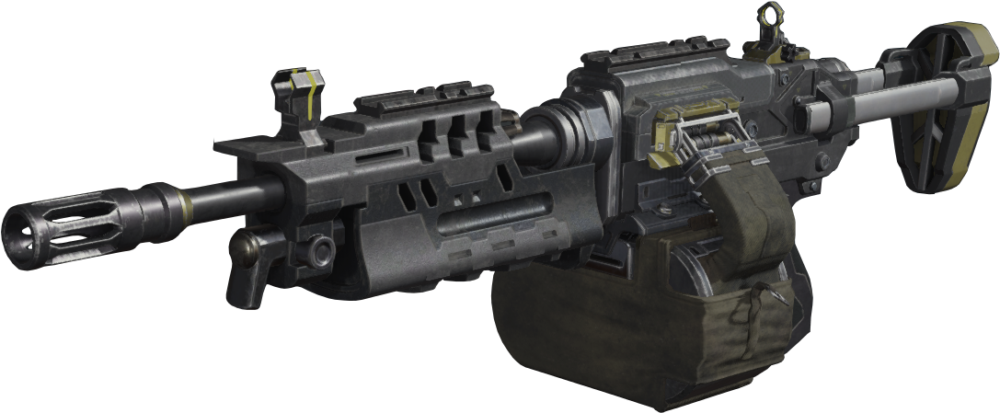
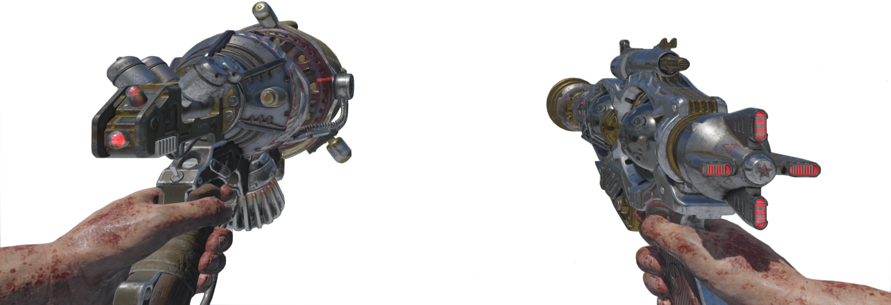
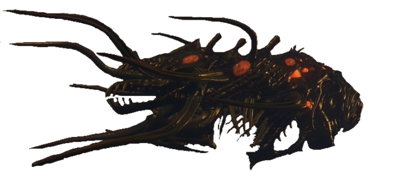

Call Of Duty Black Ops 3

Como número 3, tenemos a la ametralladora ligera BRM, excelente arma, a destacar su gran capacidad de munción(100 balas) y su elevada cadencia con moderado daño, lo que permite conseguir gran cantidad de puntos en rondas elevadas.

Como número 2, tenemos a la Raygun MK3, versión mejorada de la MK2, que consiste en un par de MK2 a dos manos y automáticas, con movilidad y manejo aumentado.

Como número 1, tenemos al Apothicon, arma secreta extremadamente difícil de conseguir capaz de eliminar de un solo disparo hordas enteras, sean de la ronda que sea.